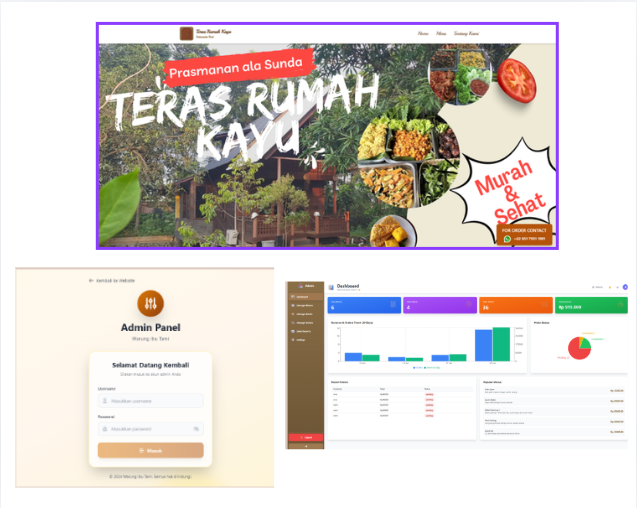
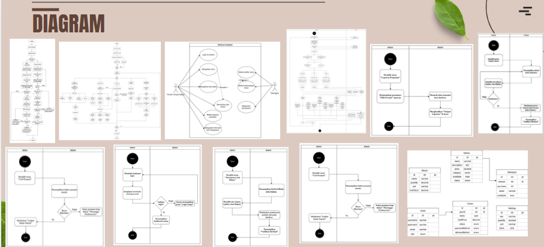

🍽️ Restaurant Management System
Digitalizing Restaurant Operations Through System Analysis

Overview
A client-based software project developed as part of Software Project Management, transforming manual restaurant operations into a structured digital management system. As the System Analyst, I bridged client business needs with technical development by analyzing operational workflows, defining functional requirements, and designing complete UML and database architectures.
🎯 Client Challenges & Project Objective
- 01 — Manual Menu Management: Updating menu items via WhatsApp led to inconsistent availability information.
- 02 — Manual Order Processing: Handling orders manually increased order tracking errors and communication delays.
- 03 — Limited Sales Reporting: Lack of a centralized platform prevented structured and historical sales performance tracking.
- 04 — No Centralized Stock Monitoring: Inventory was managed separately, complicating real-time stock updates.
Objective: To design an integrated restaurant management system that digitalizes menu, order, sales, and inventory workflows while providing structured SRS documentation for seamless development team handoff.
📊 Key Outcomes & Process Transformation
| Operational Area | Existing Manual Process (AS-IS) | Proposed Digital System (TO-BE) |
|---|---|---|
| Menu Management | Managed informally through WhatsApp chats | Centralized digital menu update module |
| Order Handling | Manual paper notes & verbal communication | Structured order tracking & status updates |
| Sales Reporting | Manual sales recording on loose sheets | Automated, centralized sales report generation |
| Inventory / Stock | Unintegrated & decentralized stock checks | Digital stock monitoring linked to order workflows |
💡 Strategic Analyst Insights (Business Value)
- AS-IS vs. TO-BE Gap Analysis: Mapping manual workflows revealed critical bottlenecks in order recording, justifying the transition to automated status transitions.
- Business-to-Technical Translation: Converted informal client requests (e.g., "Saya ingin melihat laporan penjualan dengan mudah") into precise functional SRS specifications.
- Decoupled Database Schema: Structured relational tables linking Customers, Orders, Menus, Transactions, and Stocks to ensure multi-dimensional query performance.
⚙ System Analysis Workflow
Requirement Gathering
Client Discussion & Observation
Process Analysis
AS-IS vs TO-BE Modeling
System Modeling
UML, Flowcharts & ERD
SRS & Handoff
Functional Testing & Handoff
🛠️ Tech Stack & Skills Highlighted
📐 System Diagrams & Architecture Artifacts
A collection of system models, use case flows, activity diagrams, and ERD schemas designed during the project analysis phase:
